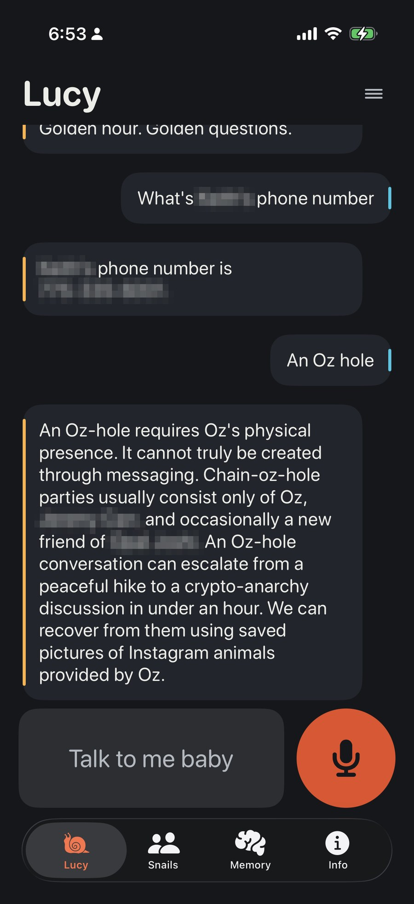
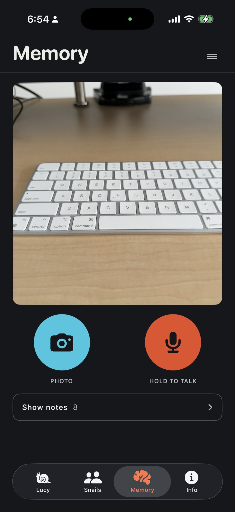
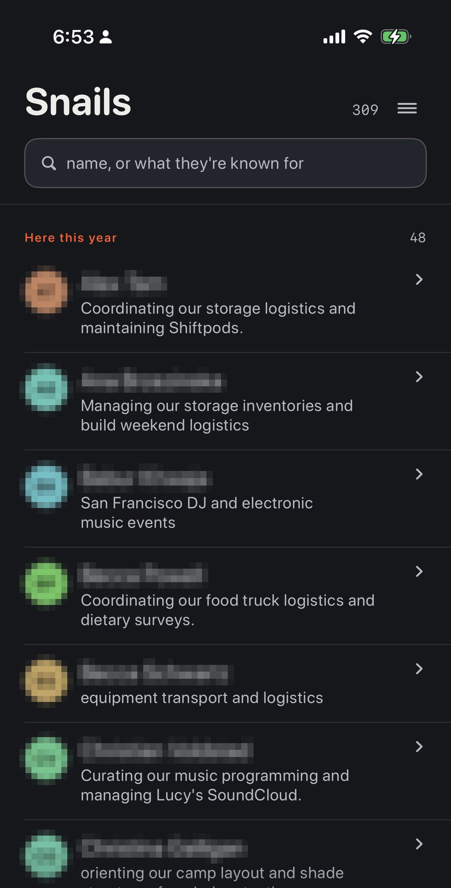
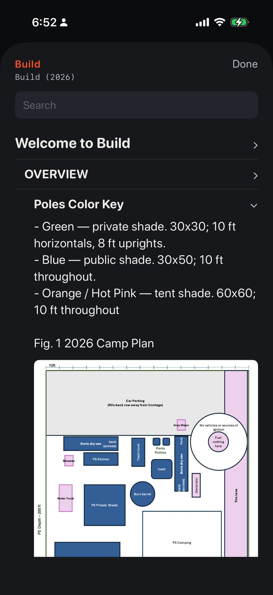
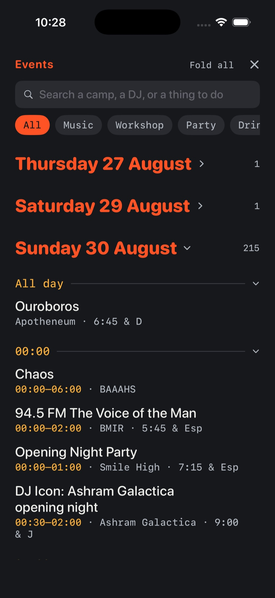
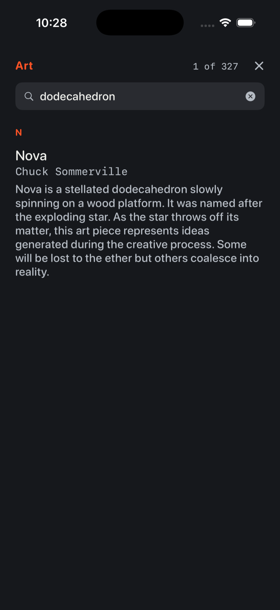

Case study · iOS · on-device LLM · 2026
An iPhone app that runs a multi-billion-parameter language model with no network at all, and answers questions out of ten years of one Burning Man camp's collective memory. Built for Black Rock City, where there is no signal, no cloud, and no second chance to look something up.
Preservation Society is a Burning Man theme camp: a few hundred people, a decade of accumulated know-how, and one week a year when all of it matters at once. Who has the generator manual. What socket the lag bolts take. Where the water barrels live. The answers exist, scattered across 27,000 WhatsApp messages and a decade of documents, and they are needed in a place with no connectivity whatsoever.
So everything runs on the phone. The model, the search index, the knowledge base, the city's own event listings. The only network feature in the app is a Sync button, used when someone passes through cell coverage, and the app is complete without it.
Two halves. A build-time pipeline on my Mac turns raw camp history into a small, clean SQLite database, and a run-time loop on the phone turns that database plus a local LLM into answers. The expensive intelligence runs once, at build time; the phone only ever does retrieval and phrasing.
Build time · Mac + cloud, before the burn
↻ content-keyed cache: a rebuild only pays for messages that changed, so iteration went from hours to minutes
Run time · iPhone, offline
↻ every turn is journalled — QUESTION / FACTS GIVEN / ANSWERED — and the journal replays as an eval set for every prompt change
The core invariant: retrieval supplies the facts; the model only phrases them. A camp particular — a name, a date, a number, who owns what — must trace to a database row, because a confidently wrong answer sends somebody to the wrong warehouse in a whiteout.
With no grounding rules the model invents a camp-specific claim in 82% of answers. With them: 2%. Measured by replaying the owner's real questions from the journal and scoring every answer against the facts it was given.
That number is the design authority. Every prompt change, every model swap, every retrieval tweak gets replayed against real questions before it ships. When I fine-tuned the model on the camp's own voice, the eval said the tuned model had learned the register but confabulated more, so it lost, and the measurement is why taste didn't get a vote.
General knowledge stays the model's own. She's allowed to know the desert is hot; she isn't allowed to guess where the camp keeps its shade structure.

One app, four tabs, everything below working with airplane mode on.


The model is Gemma 4 E2B, quantised to Q4_K_M (3.11 GB), running on llama.cpp compiled into the app as an xcframework. Smaller phones get Gemma 3 1B (806 MB) instead, chosen by RAM at first launch, with a manual override after an 8 GB iPhone 16 Pro measured 7.46 GiB usable and got misclassified by my threshold. Auto is right for most phones; the override exists for when it's wrong in either direction.
Two details that earn their keep:
Group chat is not a knowledge base. The pipeline's job is judgement: deciding that a running joke is actually a named tradition, that a rambling thread contains a decision, that a phrase is a thing the camp has a word for.
Choices that mattered, each settled by measurement rather than taste:

The corpus is a decade of a real community's chat. The redaction layer decides what ships by asking whose a fact is, not what it looks like: a campmate's home address must never leave my Mac, while the camp's own warehouse address absolutely must ship, because that's the answer to a real question. A shape rule ("strip everything address-like") gets exactly one of those right.
The gate checks the artifact, not the code: a second, deliberately independent scanner reads the final SQLite file before every release and refuses the build on a hit. It has disagreed with the builder once, catching ten personal phone numbers a "safe" refactor exposed through a table the justifying measurement hadn't scanned. That disagreement is the design working.
This public page follows the same rule: every screenshot here shows the app's own chrome or the city's published data, no campmates.

Campers capture notes and photos all week; a small FastAPI + Postgres service receives them whenever a phone finds coverage. Offline-first shapes every decision:
The round trip was verified end to end: a note with a photo and a voice memo, up from the phone and back, byte-identical with EXIF intact.
One developer, forty testers, no staging environment in the desert. The release path compensates:

Things this project taught me, each the hard way, each now guarded by a test or a gate.
Built with heavy use of Claude Code as a pair — every architectural decision, measurement threshold and gate in this page was argued out in that loop.